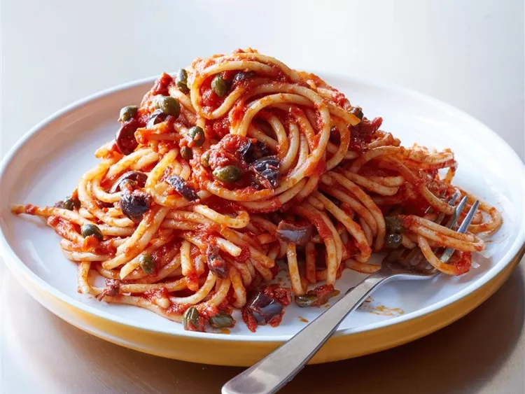

Spaghetti alla Puttanesca

This is a classic Italian pasta dish made with tomatoes, olives, capers, and anchovies.
Ingredients
- 400g spaghetti
- 2 tbsp olive oil
- 2 garlic cloves, minced
- 4 anchovy fillets, chopped
- 400g canned tomatoes
- 100g black olives, pitted
- 2 tbsp capers
- 1 tsp chili flakes
- Fresh parsley, chopped
Instructions
- Cook the spaghetti in salted boiling water until al dente.
- Heat olive oil in a pan and sauté garlic and anchovies until fragrant.
- Add canned tomatoes, olives, capers, and chili flakes. Simmer for 10 minutes.
- Drain the spaghetti and toss it with the sauce.
- Garnish with fresh parsley and serve.
Home Page